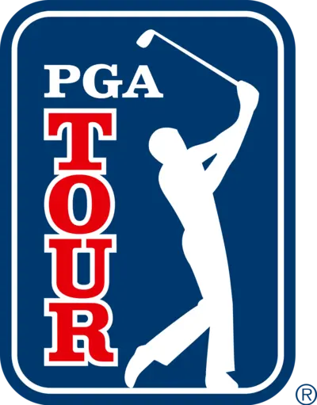
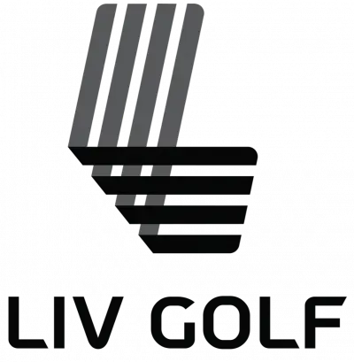

PGA Tour
The PGA Tour, established in 1929, is a premier organization in the world of professional golf, responsible for organizing and overseeing numerous golf tournaments predominantly in North America. Initially part of the Professional Golfers' Association of America (PGA), the tour's professional tournament players formed their own organization in 1968, leading to the creation of what is now known as the PGA Tour. This separation allowed the PGA Tour to focus specifically on tour players and the tournaments in which they compete.
The PGA Tour has a storied history, showcasing many of golf's greatest legends. In its early years, the tour was dominated by players like Sam Snead, Ben Hogan, and Byron Nelson, whose incredible skills and competitive spirit helped elevate the game to new heights. The tour continued to grow in popularity through the 1960s and 1970s, particularly with the rise of iconic figures like Arnold Palmer, Jack Nicklaus, and Gary Player, known collectively as "The Big Three." These players brought golf into the mainstream, attracting new fans and increasing television viewership.
In the 1980s and 1990s, the PGA Tour expanded its reach and influence, both domestically and internationally. The tour's schedule became more structured, with the introduction of a points-based system and the establishment of marquee events that are now part of the prestigious FedEx Cup Playoffs. This era also saw the emergence of dominant players like Tom Watson, Greg Norman, and Nick Faldo, who continued to push the boundaries of excellence in the sport. The tour's global appeal grew as tournaments were held outside the United States, and international players began to make their mark on the tour.
The modern era of the PGA Tour has been defined by the unparalleled impact of Tiger Woods, whose arrival in the late 1990s revolutionized the sport. Woods' extraordinary talent, combined with his marketability, brought unprecedented attention to golf. His success inspired a new generation of golfers and significantly increased the tour's commercial value. Today, the PGA Tour features a diverse and competitive field, with players like Rory McIlroy, Jordan Spieth, and Brooks Koepka continuing the legacy of excellence.
The PGA Tour is committed to growing the game of golf, supporting charitable initiatives, and providing a platform for the world's best golfers to compete at the highest level. With a robust schedule that includes major championships, World Golf Championships, and the FedEx Cup Playoffs, the PGA Tour remains at the forefront of professional golf, captivating fans and driving the sport forward.
LIV Tour
The LIV Golf Tour, launched in 2021, represents a significant disruption in the traditional landscape of professional golf. Backed by Saudi Arabia's Public Investment Fund, the tour aims to create a new paradigm in the sport, offering substantial financial incentives to attract top talent from around the globe. The tour's name, LIV, is derived from the Roman numeral for 54, representing the ideal score (birdie on every hole) for an 18-hole course and the number of holes in each tournament, which is a departure from the typical 72-hole format used in most professional events.
The creation of the LIV Golf Tour was met with both excitement and controversy. On the one hand, the significant prize money and reduced schedule were attractive to players looking for new opportunities and better work-life balance. On the other hand, the tour's association with Saudi Arabia has sparked debates about sportswashing, given the country's human rights record. Despite this, the tour has successfully recruited several high-profile golfers, including major champions and former world number ones, who were drawn by the lucrative financial packages.
The format of the LIV Golf Tour is designed to be innovative and fan-friendly. Each event features a 54-hole, no-cut format, ensuring that all participating golfers play through to the final round. Additionally, the tour incorporates team competitions, with players grouped into teams that compete for separate prizes alongside the individual events. This team aspect adds a new layer of strategy and excitement to the tournaments, appealing to a younger and more diverse audience.
The LIV Golf Tour has faced significant pushback from established golf entities, notably the PGA Tour and the DP World Tour. These organizations have responded by imposing suspensions and sanctions on players who choose to participate in LIV events, leading to legal battles and heightened tensions within the golfing community. Despite these challenges, the LIV Golf Tour continues to grow and evolve, positioning itself as a bold and ambitious alternative to traditional professional golf tours.
In summary, the LIV Golf Tour is a groundbreaking venture that seeks to revolutionize professional golf through innovative formats and substantial financial incentives. While it has generated significant controversy and faced resistance from traditional golf institutions, it has also attracted a considerable following and a roster of elite players. As the tour progresses, it will be interesting to see how it influences the future landscape of professional golf and whether it can coexist with or even reshape the existing structures in the sport.